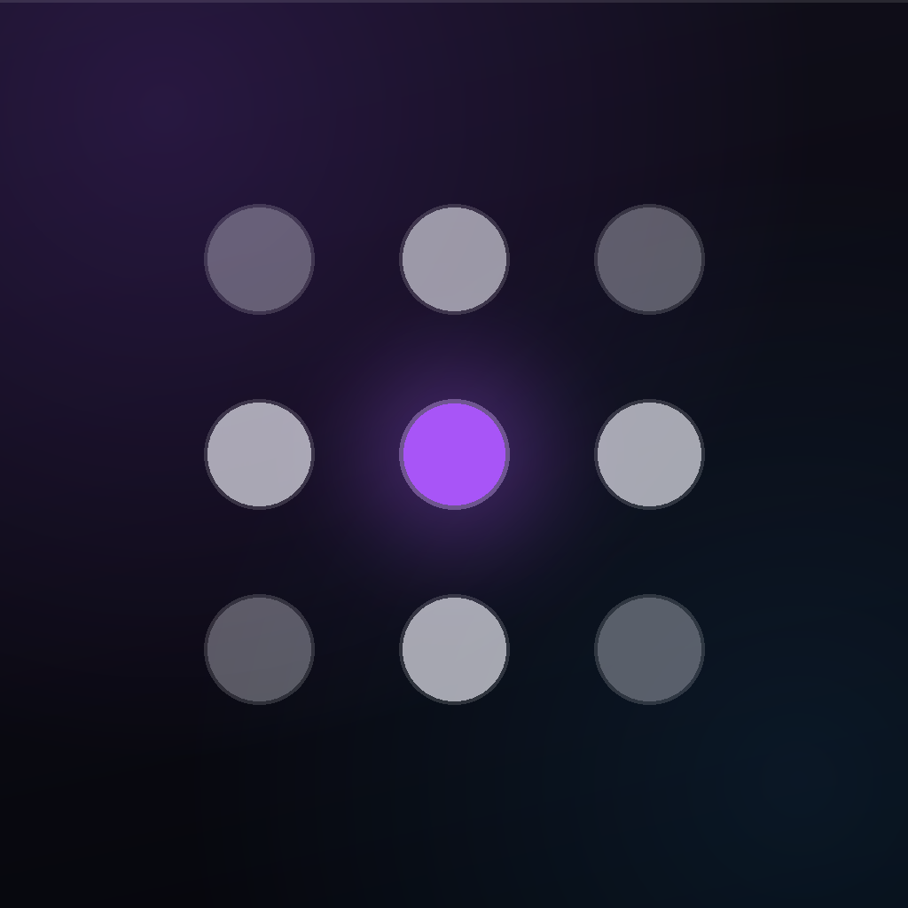

Два шага — потом YouTube в Safari как своё приложение.
Включи расширение в Safari — и ленты перестанут отвлекать.
Расширение включено. Можно открывать сайты в Safari.
Расширение выключено. Включи его в настройках Safari.
Кнопка откроет Safari → Расширения. Включи Vita Focus и «Разрешить на всех сайтах».
Если открылись просто Настройки: Приложения → Safari → Расширения.
Или прямо в Safari: ⋯ / АА в адресной строке → Управлять расширениями.
Нажми 🧩 в Safari → Vita Focus → включи блоки (Shorts, превью…).
Нажми Поделиться ↗ → На экран «Домой» — получишь свой «чистый YouTube».
Открывай YouTube через иконку на «Домой» или кнопку выше — расширение работает только в Safari.